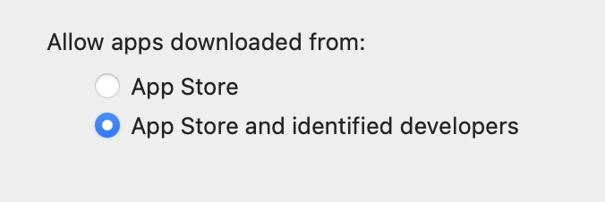
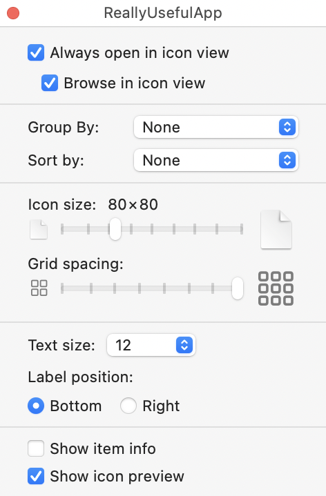

16.从外部发布¶
在上一章中，你看了通过Mac App Store发布你的应用程序的优势和劣势。然后，你经历了使用苹果系统进行测试、发布和更新的过程。
并非所有的应用程序都有资格进入Mac App Store，而且还有其他原因使你可能想从外部发布。在本章中，你会看到你需要做什么来发布你的应用程序，在App Store之外。
如果你只想使用Mac App Store，你可以跳过本章。如果你改变主意，再来看看。
苹果的守门员¶
macOS有一个名为Gatekeeper的系统，帮助我们的Mac免受恶意软件侵害。
打开System Preferences ▸ Security & Privacy。在General选项卡中，你会看到Allow apps downloaded from:。这是你配置Gatekeeper的地方：

过去有一个允许来自任何地方的应用程序的选项，但苹果已经锁定了这个选项。现在，你只有两个选项：App Store或App Store and identified developers。
要将你的应用程序列入identified developers类别，它必须有代码签名和 notarized。你把应用档案上传到苹果公司，让他们的服务器对其进行公证。
在上一章中，您创建了一个苹果开发者账户，并将其链接到Xcode。如果你跳过了那一节，现在回去做吧，这样你就可以成为这些identified developers之一。］
你将需要一个Xcode项目来工作。如果您在上一章中创建了一个示例应用程序，您可以使用它，或者您可以为本章创建一个新的空项目。
在Xcode中打开你的项目，并确保你已经在项目的目标设置中的Signing & Capabilities下选择了你的Team。
当你在那里的时候，确保Hardened Runtime被启用。这对锁定你的应用程序和保护你的用户免受恶意代码的影响有更大的作用。如果没有这个功能，苹果公司将不对一个应用程序进行公证。
如果你在Signing & Capabilities中看不到Hardened Runtime部分，请点击+ Capability并双击调色板中的Hardened Runtime来添加它。
默认情况下，Xcode不勾选所有的选项，但是如果您的应用程序使用任何列出的功能，您就必须勾选它们。
在目标设置General标签中改变Build。如果你使用数字，你可以增加这个。否则，使用你喜欢的任何方案来更新它。
在开始任何新的发布步骤之前，养成改变构建的习惯是个好主意。即使应用程序没有变化，最好为App Store发布和外部发布准备不同的构建，因为它们的处理方式不同。
现在，使用Product ▸ Archive在Organizer窗口创建一个新的存档。
导出应用程序¶
在Organizer ▸ Archives窗口，点击Distribute App，可以看到四种可能性：
你在上一章中使用了App Store Connect选项。现在，考虑一下其他的。
Copy App创建一个包含已建应用程序的文件夹。因为你已经选择了你的开发团队，它已经有了代码签名。
你可以在自己的电脑上运行它，但如果你把它交给其他人，他们会看到这个：
这里的关键短语是Apple cannot check it for malicious software。在下一节中，你将让苹果进行这种检查。
人们可以推翻AppTranslocation，并通过右键单击它，从弹出的菜单中选择Open来运行该应用程序。他们会得到另一个警告对话框，然后应用程序就会运行。有趣的是，macOS将其隔离到一个临时的AppTranslocation文件夹。
我要求ReallyUsefulApp显示它是从哪里运行的，得到了这个结果，尽管我是从应用程序文件夹中运行该应用程序：
我想这是这个应用程序做的第一件真正有用的事情。 :]
Development与Copy App类似，但如果你是开发团队的一员，你可以把这个版本发给团队的其他成员，他们可以用同样的方式运行它。
这些方法对测试很有用，但对更广泛的传播没有好处。
对应用程序进行公证¶
你唯一还没有看过的选项是Developer ID。这是一个允许你把你的应用程序发送给苹果公司的公证服务，以便他们可以确认它是干净的。这与应用审查不一样。苹果只检查你的应用程序不包含任何有害代码。
选择Developer ID并点击Next。
现在，还有几个问题需要你来完成，在每个问题之后点击Next：
- 选择
Upload，这是一个将应用程序发送至公证服务的选项。 - 如果有人问你，请确认你的开发团队。
- 选择
Automatically manage signing。
如果你还没有安装开发者证书，Xcode提供了为你生成证书的服务，但如果你通过前一章的工作，它们已经到位了。
最后，你会得到一个摘要，在那里你可以点击Upload：
这可能需要几分钟时间，但你最终会看到一个对话框，说你的应用程序已经成功公证了。这个对话框上有一个Export…按钮，但请点击Close，回到Organizer窗口。
Note
Upload对话框可能会说你的应用程序已经上传，当它准备好发布时，你会收到一个通知。只需关闭这个窗口，等待更多信息出现在Organizer窗口。
苹果的公证服务已经检查了你的应用程序，确认它没有做任何恶意的事情，并将这些信息存储在他们的服务器上。
在Organizer窗口，你会在右侧边栏的底部看到更多信息。你可能需要扩大窗口才能看到全部内容：

Note
如果你的应用程序在公证过程中失败了，请点击Show Status Log，看看出了什么问题。
Identifier是由公证服务分配的唯一ID。
Note
在你的应用程序的状态变为Ready to distribute和Identifier及Export Notarized App按钮出现之间可能会有短暂的延迟。
现在，点击Export Notarized App，导出你的应用程序的完全代码签名和公证的版本。祝贺你!
包装你的应用程序¶
你已经导出了应用程序，它看起来像一个文件，但实际上，它是一个文件夹。右键单击应用程序，选择Show Package Contents，看看里面有什么：

这意味着你的应用程序不适合发送电子邮件，也不适合上传和下载。在发布它之前，你需要以某种方式将它包装起来。
有两种主要的方法来做到这一点。最简单的是创建一个zip文件。Right-click应用程序，从上下文菜单中选择Compress “<app name>”：
这将创建一个单一的文件，您可以通过电子邮件或提供下载。苹果公司也是这样发布Xcode betas的，尽管他们使用的是XIP文件，也就是经过数字签名的压缩文件。
这种方法的主要缺点是，应用程序很可能最终出现在用户的下载文件夹中，而不是应该出现在他们的应用程序文件夹中。
更好的选择是创建一个disk image。这需要更多的工作，但它鼓励用户在他们的应用程序文件夹中安装你的应用程序。
创建一个磁盘镜像¶
设置一个磁盘镜像，或称DMG，是一个三步的过程：
- 创建一个新的空白磁盘镜像并添加你的文件。
- 配置窗口显示。
- 创建一个锁定的磁盘映像副本以便发布。
要开始，从Applications ▸ Utilities打开Disk Utility。进入File菜单，选择New Image ▸ Blank Image…。填入文件名和图像名。确保大小比你的应用程序大，并保留所有其他的默认值：

点击Save，磁盘工具会制作你的镜像。打开它来装载镜像，你会看到一个空的Finder窗口。现在，你可以把文件和文件夹放入其中。
你将添加两个项目--你的应用程序和应用程序文件夹的一个别名。这样，当用户打开图像时，他们可以直接将应用程序拖到正确的位置，而不必打开另一个Finder窗口。
要添加你的应用程序，把它从你导出的地方拖到磁盘镜像的Finder窗口。当你拖动时，你会看到green plus sign，表明你正在制作一个副本。
应用程序窗口是一个比较棘手的问题。你不想复制你的应用程序文件夹，你想添加一个alias，指向用户系统上的应用程序文件夹。
在一个新的Finder窗口中打开你的Applications文件夹。在标题栏或工具栏上Right-click Applications一词，弹出一个菜单，显示该文件夹的父文件夹。选择下一个，可能是Macintosh HD：
打开后，选择Applications，Command-Option-drag它到你的磁盘镜像窗口。当你拖动时，你会看到图标上有一个curved black arrow，表明你正在创建一个别名。
配置显示¶
现在，你的图像有两个可见的项目，但接下来你要添加的东西将是不可见的。磁盘图像经常有一个带有说明或标志的背景图像。你可以使用任何你喜欢的图像，但如果你没有，请打开本章下载材料中的assets文件夹，找到background.png。
将background.png拖入你的磁盘图像窗口，然后按Shift-Command-.显示不可见文件。
接下来，给图片重命名，在名字的前面加上一个句号，所以现在是.background.png。Finder可能会警告你，这将使文件不可见，但这正是你想要的。
Note
Finder不允许你重命名一个带有句号的文件，除非你已经显示了不可见的文件。
下一个任务是配置窗口，使它以你希望你的客户看到的方式打开。
在你的磁盘图像窗口，按Command-1到View ▸ as Icons，然后按Command-J打开查看选项。设置方法如下。
- 勾选
Always open in icon view：这也检查了Browse in icon view。 - 在
Group By和Sort By中选择None。 - 将图标大小设置为
80 x 80或任何适合你的背景图片。 - 拖动网格间距到最大设置。

接下来，你要设置背景图片。在View Options ▸ Background中选择Picture，将你的背景图片拖入图片井：
有了这些，关闭View Options窗口，然后按Shift-Command-.来隐藏看不见的文件。
为了使你的磁盘镜像窗口看起来不那么杂乱，进入Finder ▸ View，选择--切换到Show--你看到的所有Hide选项：Hide Sidebar、Hide Preview、Hide Toolbar、Hide Tab Bar、Hide Path Bar和Hide Status Bar。你可能已经隐藏了这些视图中的一些，但要隐藏所有其他的：
当所有这些菜单项都以Show而不是Hide开始时，你就成功了。
现在，将你的两个图标移到你的背景图片上的适当位置，并调整窗口的大小，使你的背景图片填满它：
锁定它¶
最后一步是通过创建一个只读的副本来锁定你的磁盘镜像。
在另一个Finder窗口中，选择新的磁盘镜像并按Command-E弹出。这就取消了挂载，但你仍然有DMG文件。
再次打开Disk Utility，进入Images ▸ Convert...。选择你的DMG文件，给它一个不同的名字，并将图像格式设置为read-only：
点击Convert，等待磁盘工具创建你的新图像。这也会调整它的大小以适应你的应用程序。打开你的新镜像，你会看到它完全按照你的设置出现。
Note
如果你的新磁盘镜像没有显示背景图片，弹出并删除新创建的只读镜像。再次打开可写镜像，确保它的设置是正确的。移动或调整窗口的大小，迫使Finder将其配置写入.DS_Store文件，然后再试一次。
进一步公证¶
一些资料显示，你还应该对磁盘镜像或压缩文件进行公证。我发现这没有必要，但如果你想这样做，在Catalyst by Tutorials的第14章有详细说明。
销售你的应用程序¶
你已经准备好了要发行的应用程序。苹果公司的公证服务已经批准了它，你已经把它包装好供下载。现在怎么办？
你将如何向你的客户提供你的应用程序？你是否要收费？你将需要一个网站来托管你的应用程序和有关信息。如果你对应用程序收费，你将需要一个支付系统。
如果应用程序是免费的，把它放在你的网站上，并开始向人们介绍它。如果你还没有网站，有很多网站建设者可以让你迅速开始。Squarespace是一种可能性，如果你要为你的应用程序收费，它还提供支付设施。
另一个选择是把责任推给第三方转售商。在这种情况下，Paddle是一个可以考虑的好选择。他们收取一定的费用，但为你分担了很多压力。
发布更新¶
在对外发布你的应用程序时，你需要解决更新的问题。在App Store中，更新会自动推送给用户，但当你自己发布的时候，你必须处理这个问题。
最简单的选择是在你的网站上有一个包含最新版本信息的文件。你的应用程序可以定期检查这个文件，如果它是较新的，就引导用户到下载网站获得更新。
你的应用程序需要一种方法来获得其版本和构建。这个方法可以做到这一点：
func versionAndBuild() -> String {
if
let bundleInfo = Bundle.main.infoDictionary,
let version = bundleInfo["CFBundleShortVersionString"] as? String,
let build = bundleInfo["CFBundleVersion"] as? String {
return "Version: \(version) (\(build))"
}
return "Version: unknown"
}
这是从Info.plist中提取两个条目，检查它们是否是字符串，并将它们组合成一个字符串。
一个更自动的方法是使用Sparkle这样的框架。这是一个非常流行的开源库，用于向Mac应用程序添加更新设施。
每当你更新时，你必须创建一个新的Xcode档案，并在发布前得到新版本的公证。
故障排除¶
可悲的是，你不会收到来自App Store以外的应用程序的崩溃报告。人们仍然可以提出报告，但这些报告会消失在苹果的服务器中，再也看不到了。
正因为如此，给你的用户提供一种直接联系你的方式，告诉你任何问题是很重要的。你可以通过包括一个调用此方法的按钮或菜单项来实现：
func emailDeveloper() {
// 1
let subject = "Really Useful App \(versionAndBuild())"
// 2
.addingPercentEncoding(withAllowedCharacters: .urlQueryAllowed)!
// 3
let link = "mailto:dev@example.com?subject=\(subject)"
// 4
if let url = URL(string: link) {
NSWorkspace.shared.open(url)
}
}
这有什么作用？
- 使用之前的方法获得版本信息，并将其附加到应用程序名称中。
- 对其进行编码，作为
URL中的一个查询。你知道这里会有什么，所以在这种情况下强制解包是安全的。 - 创建一个包含收件人和编码主题的
mailto链接。 - 将链接转换成一个URL，并使用
NSWorkspace在默认的电子邮件应用程序中打开它。
添加一个链接到你的社交媒体账户也是一个好主意，特别是对于那些只使用基于网络的电子邮件客户端的人。使用NSWorkspace.shared.open()在浏览器中打开这些。
关键点¶
- 虽然在
App Store之外发布可以让你摆脱一些限制，但你仍然需要让苹果对你的应用程序进行公证。 - 一个应用程序实际上是一个文件夹，所以你需要把它包装起来以便分发。
- 处理应用程序的付款现在是你的责任，尽管有转售商可以帮忙。
- 你必须实施一个向你的应用程序的用户发送更新的程序。